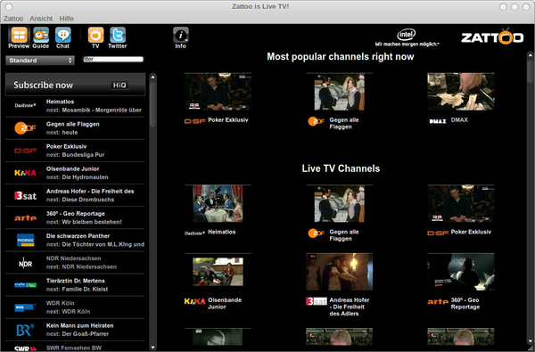

Zattoo
Hinweis:
Zattoo hat seine Unterstützung für Linux eingestellt. Das Debian-Paket, das Zattoo z.Zt. noch zum Herunterladen anbietet (zattoo-4.0.5-i386.deb), verstößt gegen die Qualitätsstandards und werde laut Zattoo Support Team demnächst von der Homepage entfernt.
Archivierte Anleitung
Dieser Artikel wurde archiviert, da er - oder Teile daraus - nur noch unter einer älteren Ubuntu-Version nutzbar ist. Diese Anleitung wird vom Wiki-Team weder auf Richtigkeit überprüft noch anderweitig gepflegt. Zusätzlich wurde der Artikel für weitere Änderungen gesperrt.
Zum Verständnis dieses Artikels sind folgende Seiten hilfreich:
Zattoo  ist ein kostenloser proprietärer Internet-TV-Player. Der Zattoo-Dienst stellt in Deutschland etwa 100 TV-Kanäle über das Internet bereit. Die Zahl der TV-Sender steigt allerdings stetig. Zattoo bringt das TV-Programm kostenlos via Internet-Stream auf den Computer - es wird also keine TV-Karte benötigt. Das Angebot von Zattoo kann nach einer Registrierung auf der Webseite von Zattoo kostenlos genutzt werden.
ist ein kostenloser proprietärer Internet-TV-Player. Der Zattoo-Dienst stellt in Deutschland etwa 100 TV-Kanäle über das Internet bereit. Die Zahl der TV-Sender steigt allerdings stetig. Zattoo bringt das TV-Programm kostenlos via Internet-Stream auf den Computer - es wird also keine TV-Karte benötigt. Das Angebot von Zattoo kann nach einer Registrierung auf der Webseite von Zattoo kostenlos genutzt werden.
Der Service finanziert sich über Werbung, die bei Programmstart oder Senderwechsel eingeblendet wird. Alternativ kann man Zattoo HiQ auch abonnieren (2 Euro für einen Monat, 5€ für drei Monate oder 20€ für 12 Monate). Mit dem Abonnement kann man bestimmte Sender in einer besseren Qualität und ohne zusätzliche Werbeeinblendungen von Zattoo empfangen.
Installation¶
Auf einem 32-bit System¶
Hinweis!
Fremdpakete können das System gefährden.
Das Zattoo Player-Paket ist noch nicht in den Ubuntu-Quellen vorhanden und muss deshalb von zattoo.com als Ubuntu-Paket (Debian) heruntergeladen und mit einem Doppelklick auf die Datei installiert werden [3]. Das Paket ist laut Zattoo für Ubuntu 8.04 Hardy Heron oder neuere Ubuntu-Versionen geeignet. Nach der Installation aller Pakete lässt sich der Zattoo Player über das Programme-Menü unter
"Anwendungen -> Unterhaltungsmedien -> Zattoo Player"
starten. Beim ersten Start muss ein Login eingegeben werden, sollte man noch keinen Account bei Zattoo besitzen, so kann man aus dem Programm heraus einen Account erzeugen
Hinweis:
Kommt es durch das Klicken auf "Sign Up" zu einer Fehlerseite auf Zattoo, so kann man den Account jedoch problemlos auf der Zattoo-Homepage erzeugen .
Auf einem 64-bit-System¶
Zattoo bietet leider bis dato keine 64-bit-Version ihres Programms an. Das verkompliziert die Installation leider etwas. Aber es ist problemlos möglich, Zattoo auch auf einem 64-bit-Ubuntu zu benutzen. Dazu lädt man sich das .deb-Paket von Zattoo wie eingangs beschrieben auf bspw. den Desktop herunter und erzwingt die Installation aus der .deb-Datei von Zattoo [2].
sudo dpkg -i --force-all ~/Desktop/zattoo*.deb
Adobe Flash wird nicht gefunden¶
Beim Starten von Zattoo meint das Programm dann, dass Adobe Flash nicht gefunden werden kann. Selbst wenn Flash wie hier beschrieben installiert wurde, erscheint oft diese Meldung:
Das Flash Plugin ist nicht installiert. Bitte laden sie das Adobe Flash Plugin von http://www.adobe.com herunter und installieren sie es
Dies liegt wohl daran, dass Zattoo an den falschen Stellen im System nach Flash sucht. Die einfachste Möglichkeit, dieses Problem zu lösen, ist, das Flashplugin in den Profilordner von Firefox zu verlinken. Dazu führt man diese Befehle [3]
mkdir ~/.mozilla/plugins ln -s /usr/lib/flashplugin-installer/libflashplayer.so ~/.mozilla/plugins/ # Ab Ubuntu Lucid Lynx 10.04
aus. So sollte die Fehlermeldung nicht mehr erscheinen. Jeder Benutzer auf dem System muss diese Befehle einmal ausführen.
Bedienung¶
Die Bedienung des Programms ist nicht sehr kompliziert. Auf der linken Seite befindet sich eine Liste mit allen verfügbaren Sendern. Im oberen Teil sind die kostenlosen Angebote einsortiert, im unteren die "HiQ-Kanäle" für die man ein Zattoo-Abonnement benötigt. Über einen Klick auf den Kanal startet man den Video-Stream. Im oberen Teil des Zattoo-Fensters findet man Schaltflächen für eine Vorschau-Funktion, einen Programmführer und verschiedene "Community-Funktionen" wie Chat oder Twitter.



- Erstellt mit Inyoka
-
 2004 – 2017 ubuntuusers.de • Einige Rechte vorbehalten
2004 – 2017 ubuntuusers.de • Einige Rechte vorbehalten
Lizenz • Kontakt • Datenschutz • Impressum • Serverstatus -
Serverhousing gespendet von